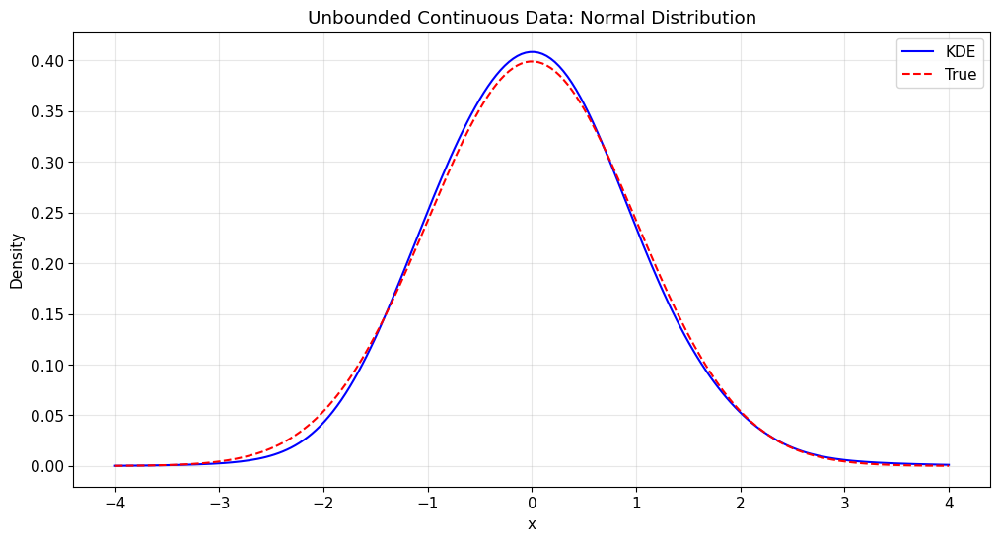
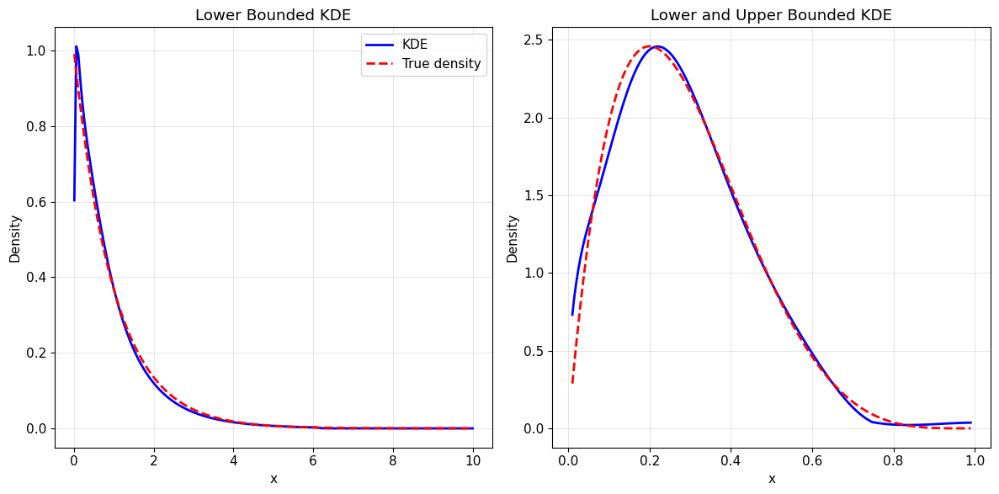
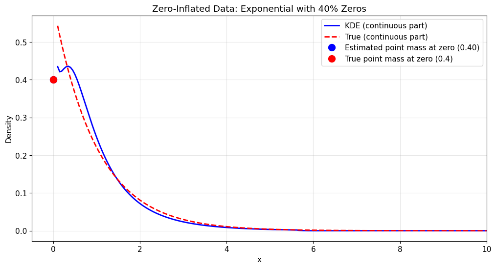
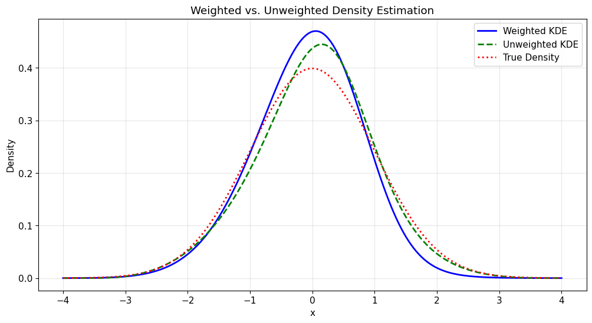
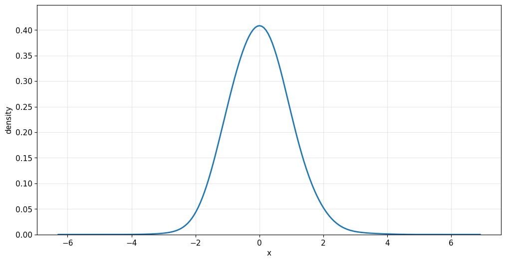
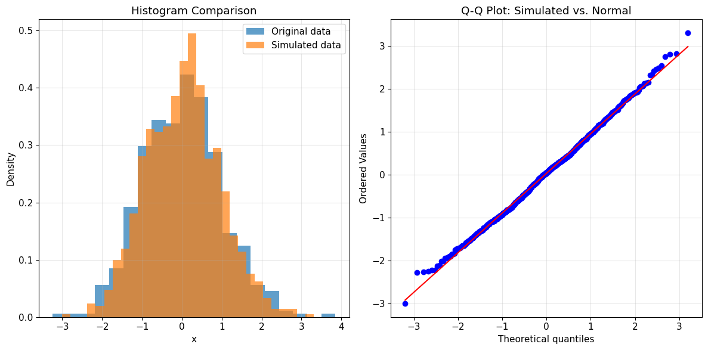

The univariate kernel density estimation (Kde1d) API
This notebook demonstrates the usage of the Kde1d class from pyvinecopulib for various types of kernel density estimation tasks. Each section includes data generation, model fitting, evaluation, and visualization:
Unbounded continuous data: Standard kernel density estimation with automatic bandwidth selection
Bounded continuous data: Boundary-corrected estimation with custom degree parameters
Discrete data: Specialized estimation for integer-valued data
Zero-inflated data: Handling excess zeros with mixed continuous-discrete models
Weighted estimation: Incorporating observation weights in the estimation process
Simulation and inference: Generating samples and computing quantiles from fitted densities
Key Features
Automatic boundary correction for bounded data
Support for different polynomial degrees
Automatic bandwidth selection
Comprehensive statistical interface (pdf, cdf, quantile, simulate, plot)
Setup and Imports
[2]:
import numpy as np
import matplotlib.pyplot as plt
import scipy.stats as stats
import pyvinecopulib as pv
# Set random seed for reproducibility
np.random.seed(42)
# Configure matplotlib for better plots
plt.style.use("default")
plt.rcParams["figure.figsize"] = (12, 6)
plt.rcParams["font.size"] = 11
print("Libraries imported successfully!")
print(f"pyvinecopulib version: {pv.__version__}")
Libraries imported successfully!
pyvinecopulib version: 0.7.4
1. Unbounded Continuous Data
Let’s start with the simplest case: unbounded continuous data using a normal distribution.
[ ]:
# Generate normal data
x_normal = np.random.normal(0, 1, 500)
# Create and fit Kde1d object
kde_normal = pv.Kde1d() # Default constructor for continuous unbounded data
kde_normal.fit(x_normal)
print(f"Kde1d fitted to normal data: {kde_normal}")
print(f"Log-likelihood: {kde_normal.loglik:.4f}")
print(f"Effective degrees of freedom: {kde_normal.edf:.2f}")
# Evaluate density at specific points
eval_points = np.array([0.0, -1.0, 1.0, -2.0, 2.0])
density_values = kde_normal.pdf(eval_points)
print("\nDensity evaluation:")
for point, density in zip(eval_points, density_values):
true_density = stats.norm.pdf(point) # True normal density for comparison
print(
f"x = {point:4.1f}: estimated = {density:.4f}, true = {true_density:.4f}, diff = {abs(density - true_density):.4f}"
)
Kde1d fitted to normal data: <pyvinecopulib.Kde1d> Kde1d(xmin=nan, xmax=nan, type='continuous', bandwidth=0.763029, multiplier=1, degree=2)
Number of grid points: 401
Log-likelihood: -696.9225
Effective degrees of freedom: 7.00
Density evaluation:
x = 0.0: estimated = 0.4084, true = 0.3989, diff = 0.0095
x = -1.0: estimated = 0.2512, true = 0.2420, diff = 0.0092
x = 1.0: estimated = 0.2350, true = 0.2420, diff = 0.0070
x = -2.0: estimated = 0.0428, true = 0.0540, diff = 0.0112
x = 2.0: estimated = 0.0526, true = 0.0540, diff = 0.0014
[12]:
# Plot the density estimate
plt.figure(figsize=(12, 6))
# Add true density for comparison
x_range = np.linspace(-4, 4, 200)
true_density = stats.norm.pdf(x_range)
kde_density = kde_normal.pdf(x_range)
plt.plot(x_range, kde_density, "b-", label="KDE")
plt.plot(x_range, true_density, "r--", label="True")
plt.title("Unbounded Continuous Data: Normal Distribution")
plt.xlabel("x")
plt.ylabel("Density")
plt.legend()
plt.grid(True, alpha=0.3)
plt.show()

2. Bounded Continuous Data
Now let’s work with bounded data using gamma and beta distributions.
[15]:
# Generate gamma and betadata
x_gamma = np.random.gamma(shape=1, scale=1, size=500)
x_beta = np.random.beta(a=2, b=5, size=500)
# Create Kde1d for bounded data (gamma distribution)
# Set xmin=0 since gamma distribution is defined on [0, ∞)
kde_gamma = pv.Kde1d(xmin=0)
kde_gamma.fit(x_gamma)
print(f"Kde1d fitted to gamma data (bounded at 0): {kde_gamma}")
print(f"Log-likelihood: {kde_gamma.loglik:.4f}")
print(f"Effective degrees of freedom: {kde_gamma.edf:.2f}")
# Create Kde1d for bounded data (beta distribution)
# Set xmin=0 and xmax=1 since beta distribution is defined on [0, 1]
kde_beta = pv.Kde1d(xmin=0, xmax=1)
kde_beta.fit(x_beta)
print(f"Kde1d fitted to beta data (bounded between 0 and 1): {kde_beta}")
print(f"Log-likelihood: {kde_beta.loglik:.4f}")
print(f"Effective degrees of freedom: {kde_beta.edf:.2f}")
Kde1d fitted to gamma data (bounded at 0): <pyvinecopulib.Kde1d> Kde1d(xmin=0, xmax=nan, type='continuous', bandwidth=0.813595, multiplier=1, degree=2)
Log-likelihood: -491.5955
Effective degrees of freedom: 7.68
Kde1d fitted to beta data (bounded between 0 and 1): <pyvinecopulib.Kde1d> Kde1d(xmin=0, xmax=1, type='continuous', bandwidth=0.36799, multiplier=1, degree=2)
Log-likelihood: 235.5237
Effective degrees of freedom: 6.12
[18]:
# Overlay true density for comparison - Manual plotting approach
eps = 1e-2 # Small epsilon to avoid boundary issues
x_range_gamma = np.linspace(0 + eps, 10, 200)
true_density_gamma = stats.gamma.pdf(x_range_gamma, a=1) # True gamma density
kde_density_gamma = kde_gamma.pdf(x_range_gamma)
x_range_beta = np.linspace(0 + eps, 1 - eps, 200)
true_density_beta = stats.beta.pdf(x_range_beta, a=2, b=5) # True beta density
kde_density_beta = kde_beta.pdf(x_range_beta)
plt.figure(figsize=(12, 6))
plt.subplot(1, 2, 1)
plt.plot(x_range_gamma, kde_density_gamma, "b-", linewidth=2, label="KDE")
plt.plot(
x_range_gamma, true_density_gamma, "r--", linewidth=2, label="True density"
)
plt.xlabel("x")
plt.ylabel("Density")
plt.title("Lower Bounded KDE")
plt.legend()
plt.grid(True, alpha=0.3)
plt.subplot(1, 2, 2)
plt.plot(x_range_beta, kde_density_beta, "b-", linewidth=2, label="KDE")
plt.plot(
x_range_beta, true_density_beta, "r--", linewidth=2, label="True density"
)
plt.xlabel("x")
plt.ylabel("Density")
plt.title("Lower and Upper Bounded KDE")
plt.grid(True, alpha=0.3)
plt.tight_layout()
plt.show()

3. Discrete Data
For discrete data, we need to specify the type as “discrete” and set appropriate bounds.
[20]:
# Generate discrete data (binomial distribution)
x_binomial = np.random.binomial(n=5, p=0.5, size=500)
# Create Kde1d for discrete data
# Set type="discrete" and specify bounds [0, 5] since binomial(n=5) has support on {0,1,2,3,4,5}
kde_discrete = pv.Kde1d(xmin=0, xmax=5, type="discrete")
kde_discrete.fit(x_binomial)
print(f"Kde1d fitted to discrete data (binomial): {kde_discrete}")
print(f"Log-likelihood: {kde_discrete.loglik:.4f}")
print(f"Effective degrees of freedom: {kde_discrete.edf:.2f}")
# Evaluate density at integer points (the support of binomial distribution)
eval_points_discrete = np.array([0, 1, 2, 3, 4, 5])
density_discrete = kde_discrete.pdf(eval_points_discrete.astype(float))
print("\nDensity evaluation for discrete data:")
print("Point | Estimated | True (Binom) | Empirical Frequency")
print("------|-----------|--------------|---------------")
frequency_counts = np.bincount(x_binomial, minlength=6)
empirical_frequencies = frequency_counts / len(x_binomial)
for point in eval_points_discrete:
estimated = kde_discrete.pdf(np.array([float(point)]))[0]
true_density = stats.binom.pmf(point, n=5, p=0.5)
count = np.sum(x_binomial == point)
print(
f" {point} | {estimated:.4f} | {true_density:.4f} | {empirical_frequencies[point]:.4f}"
)
Kde1d fitted to discrete data (binomial): <pyvinecopulib.Kde1d> Kde1d(xmin=0, xmax=5, type='discrete', bandwidth=1.11374, multiplier=1, degree=2)
Log-likelihood: -758.9803
Effective degrees of freedom: 4.02
Density evaluation for discrete data:
Point | Estimated | True (Binom) | Empirical Frequency
------|-----------|--------------|---------------
0 | 0.0375 | 0.0312 | 0.0360
1 | 0.1642 | 0.1562 | 0.1640
2 | 0.3173 | 0.3125 | 0.3160
3 | 0.3094 | 0.3125 | 0.3140
4 | 0.1451 | 0.1562 | 0.1440
5 | 0.0266 | 0.0312 | 0.0260
4. Zero-Inflated Data
Zero-inflated data requires special treatment using the “zero-inflated” type to handle the excess zeros.
[26]:
# Generate zero-inflated data (exponential with added zeros)
x_zi = np.random.exponential(scale=1, size=500)
zero_indices = np.random.choice(500, size=200, replace=False)
x_zi[zero_indices] = 0
# Create Kde1d for zero-inflated data
# Set type="zero-inflated" and xmin=0 since we know the data is non-negative
kde_zi = pv.Kde1d(xmin=0, type="zero-inflated")
kde_zi.fit(x_zi)
print(f"Kde1d fitted to zero-inflated data: {kde_zi}")
print(f"Log-likelihood: {kde_zi.loglik:.4f}")
print(f"Effective degrees of freedom: {kde_zi.edf:.2f}")
print(f"Probability at zero (prob0): {kde_zi.prob0:.4f}")
# Evaluate density at specific points including zero
eval_points_zi = np.array([0.0, 0.5, 1.0, 2.0, 4.0, 6.0])
density_zi = kde_zi.pdf(eval_points_zi)
print("\nDensity evaluation for zero-inflated data:")
for point, density in zip(eval_points_zi, density_zi):
if point == 0:
print(f"x = {point:4.1f}: estimated = {density:.4f} (includes point mass)")
else:
# True density for continuous part: 0.6 * exp(-x/2) / 2
true_continuous = 0.6 * stats.expon.pdf(point, scale=2)
print(
f"x = {point:4.1f}: estimated = {density:.4f}, true continuous = {true_continuous:.4f}"
)
Kde1d fitted to zero-inflated data: <pyvinecopulib.Kde1d> Kde1d(xmin=0, xmax=nan, type='zero-inflated', bandwidth=0.768109, multiplier=1, degree=2)
Log-likelihood: -628.2624
Effective degrees of freedom: 8.48
Probability at zero (prob0): 0.4000
Density evaluation for zero-inflated data:
x = 0.0: estimated = 0.4000 (includes point mass)
x = 0.5: estimated = 0.4139, true continuous = 0.2336
x = 1.0: estimated = 0.2476, true continuous = 0.1820
x = 2.0: estimated = 0.0721, true continuous = 0.1104
x = 4.0: estimated = 0.0087, true continuous = 0.0406
x = 6.0: estimated = 0.0000, true continuous = 0.0149
[29]:
x_range = np.linspace(0.1, 10, 200)
kde_density_zi = kde_zi.pdf(x_range)
true_density_zi = 0.6 * stats.expon.pdf(x_range, scale=1)
# Plot the zero-inflated density estimate
plt.figure(figsize=(12, 6))
plt.plot(
x_range, kde_density_zi, "b-", label="KDE (continuous part)", linewidth=2
)
plt.plot(
x_range, true_density_zi, "r--", label="True (continuous part)", linewidth=2
)
# Add point mass at zero
plt.plot(
0,
kde_zi.prob0,
"bo",
markersize=10,
label=f"Estimated point mass at zero ({kde_zi.prob0:.2f})",
markerfacecolor="blue",
)
plt.plot(
0,
0.4,
"ro",
markersize=10,
label="True point mass at zero (0.4)",
markerfacecolor="red",
)
plt.title("Zero-Inflated Data: Exponential with 40% Zeros")
plt.xlabel("x")
plt.ylabel("Density")
plt.legend()
plt.grid(True, alpha=0.3)
plt.xlim(-0.5, 10)
plt.show()

5. Weighted Density Estimation
Kde1d supports weighted estimation, useful for bootstrap procedures or when observations have different importance.
[30]:
# Generate data for weighted estimation
x_weighted = np.random.normal(0, 1, 100)
weights = np.random.exponential(scale=1, size=100) # Random weights
# Weighted estimation - fit the same data with and without weights
kde_weighted = pv.Kde1d()
kde_weighted.fit(x_weighted, weights)
kde_unweighted = pv.Kde1d()
kde_unweighted.fit(x_weighted)
print("Weighted vs. Unweighted estimation:")
print(
f"Weighted - Bandwidth: {kde_weighted.bandwidth:.4f}, Log-likelihood: {kde_weighted.loglik:.4f}"
)
print(
f"Unweighted - Bandwidth: {kde_unweighted.bandwidth:.4f}, Log-likelihood: {kde_unweighted.loglik:.4f}"
)
# Compare density estimates at specific points
eval_points_weight = np.array([-2, -1, 0, 1, 2])
density_weighted = kde_weighted.pdf(eval_points_weight)
density_unweighted = kde_unweighted.pdf(eval_points_weight)
print("\nDensity comparison (weighted vs. unweighted):")
print("Point | Weighted | Unweighted | Difference")
print("------|----------|------------|------------")
for point, w_dens, uw_dens in zip(
eval_points_weight, density_weighted, density_unweighted
):
diff = abs(w_dens - uw_dens)
print(f" {point:2.0f} | {w_dens:.4f} | {uw_dens:.4f} | {diff:.4f}")
print(
f"\nWeight statistics: min={weights.min():.3f}, max={weights.max():.3f}, mean={weights.mean():.3f}"
)
Weighted vs. Unweighted estimation:
Weighted - Bandwidth: 1.0910, Log-likelihood: -126.7015
Unweighted - Bandwidth: 0.8605, Log-likelihood: -136.2553
Density comparison (weighted vs. unweighted):
Point | Weighted | Unweighted | Difference
------|----------|------------|------------
-2 | 0.0454 | 0.0512 | 0.0058
-1 | 0.2374 | 0.2064 | 0.0310
0 | 0.4691 | 0.4371 | 0.0320
1 | 0.2244 | 0.2512 | 0.0268
2 | 0.0194 | 0.0463 | 0.0269
Weight statistics: min=0.006, max=4.020, mean=0.916
[32]:
x_range = np.linspace(-4, 4, 200)
true_density = stats.norm.pdf(x_range)
kde_density_weighted = kde_weighted.pdf(x_range)
kde_density_unweighted = kde_unweighted.pdf(x_range)
# Plot comparison of weighted vs. unweighted estimates
plt.figure(figsize=(12, 6))
plt.plot(x_range, kde_density_weighted, "b-", label="Weighted KDE", linewidth=2)
plt.plot(
x_range, kde_density_unweighted, "g--", label="Unweighted KDE", linewidth=2
)
plt.plot(x_range, true_density, "r:", label="True Density", linewidth=2)
plt.title("Weighted vs. Unweighted Density Estimation")
plt.xlabel("x")
plt.ylabel("Density")
plt.legend()
plt.grid(True, alpha=0.3)
plt.show()

6. Plots, Simulation and Additional Features
The Kde1d class also supports plotting directly, simulation from the fitted density and more.
[ ]:
kde_normal.plot()
# Simulate from fitted density
simulated_data = kde_normal.simulate(n=1000, seeds=[123])
print("Simulation from fitted normal density:")
print(f"Original data: mean={x_normal.mean():.3f}, std={x_normal.std():.3f}")
print(
f"Simulated data: mean={simulated_data.mean():.3f}, std={simulated_data.std():.3f}"
)
# CDF and quantile functions
print("\nCDF and quantile evaluation for normal kde:")
test_points = np.array([-1, 0, 1])
cdf_values = kde_normal.cdf(test_points)
print(f"CDF at [-1, 0, 1]: {cdf_values}")
quantiles = np.array([0.25, 0.5, 0.75])
quantile_values = kde_normal.quantile(quantiles)
print(f"Quantiles at [0.25, 0.5, 0.75]: {quantile_values}")
# True values for comparison
true_cdf = stats.norm.cdf(test_points)
true_quantiles = stats.norm.ppf(quantiles)
print(f"True CDF values: {true_cdf}")
print(f"True quantiles: {true_quantiles}")
# Plot histogram of simulated data vs. original
plt.figure(figsize=(12, 6))
plt.subplot(1, 2, 1)
plt.hist(x_normal, bins=20, density=True, alpha=0.7, label="Original data")
plt.hist(
simulated_data, bins=30, density=True, alpha=0.7, label="Simulated data"
)
plt.title("Histogram Comparison")
plt.xlabel("x")
plt.ylabel("Density")
plt.legend()
plt.grid(True, alpha=0.3)
plt.subplot(1, 2, 2)
# Q-Q plot
stats.probplot(simulated_data, dist=stats.norm, plot=plt)
plt.title("Q-Q Plot: Simulated vs. Normal")
plt.grid(True, alpha=0.3)
plt.tight_layout()
plt.show()

Simulation from fitted normal density:
Original data: mean=0.007, std=0.980
Simulated data: mean=0.029, std=0.922
CDF and quantile evaluation for normal kde:
CDF at [-1, 0, 1]: [0.149304 0.5003765 0.84513907]
Quantiles at [0.25, 0.5, 0.75]: [-0.65620319 -0.00092187 0.65901036]
True CDF values: [0.15865525 0.5 0.84134475]
True quantiles: [-0.67448975 0. 0.67448975]
